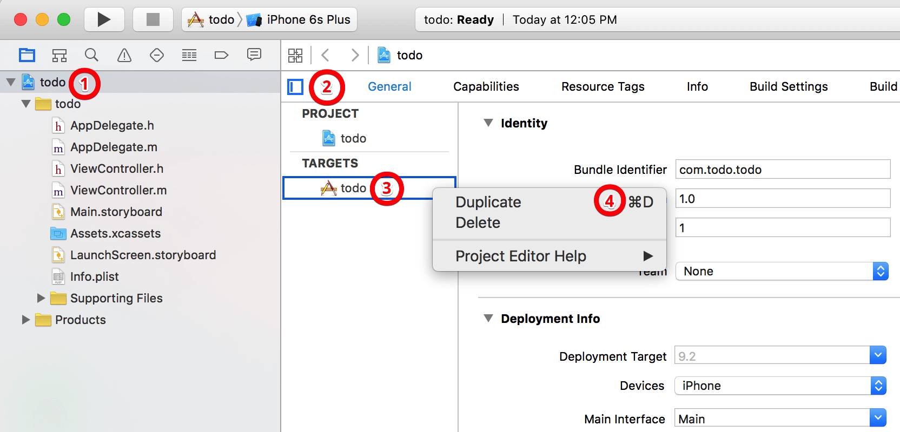
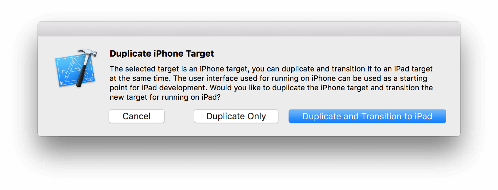
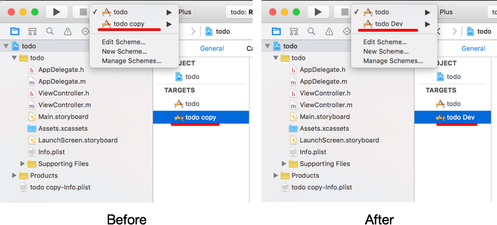
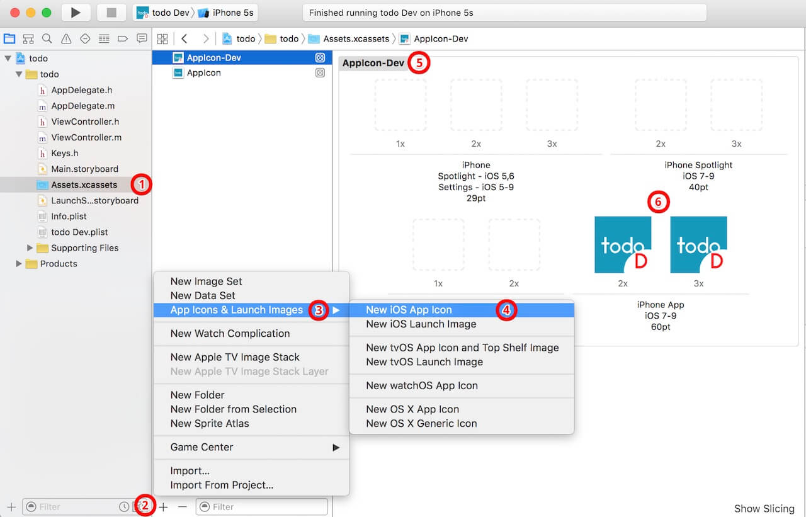
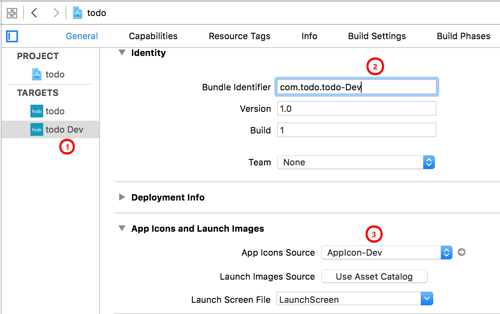
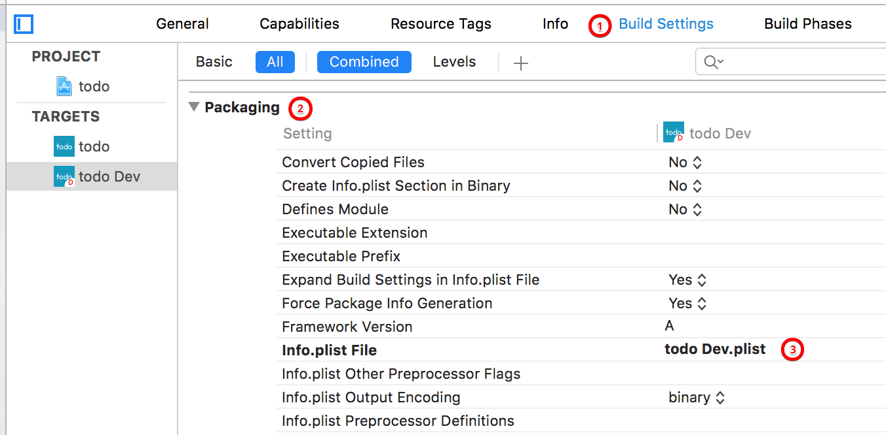
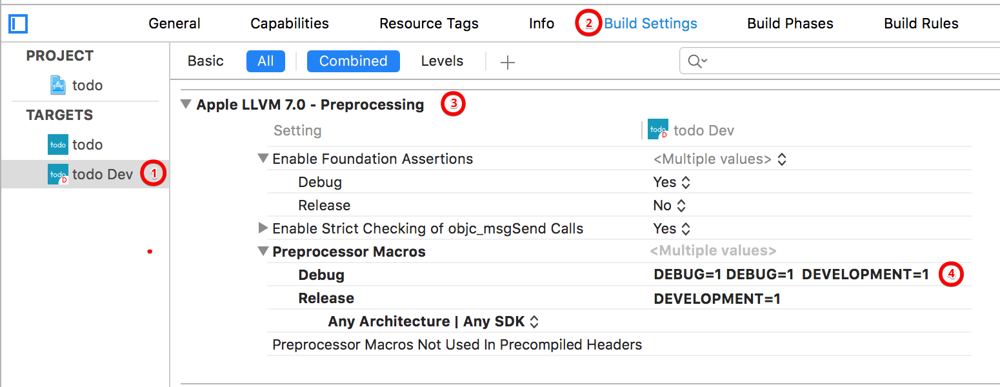
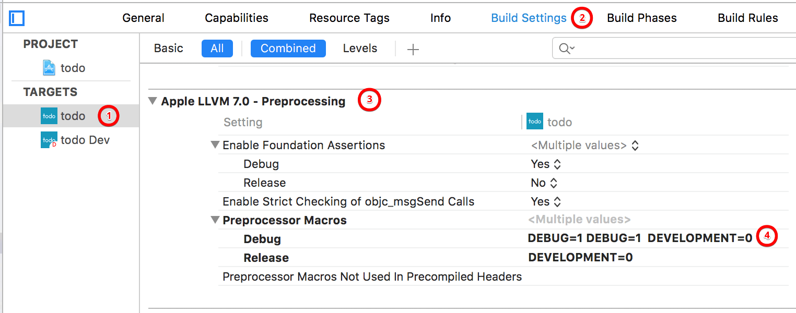
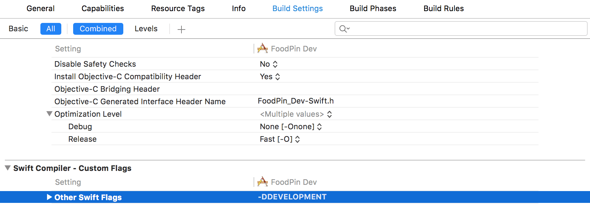
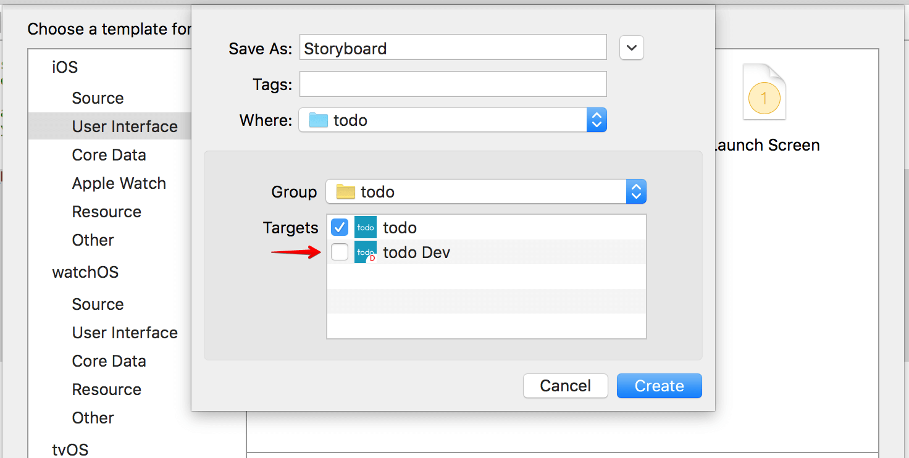

编者提示：这篇文章由Eugene Trapeznikov贡献。想象一下，你已经完成了您的应用程序的开发和测试，你现在准备提交生产版本。问题是，一些web服务的url指向测试服务器，同时API密钥被配置用于测试环境。在提交app给苹果审核前，你需要修改所有这些API密钥和URL适应生产版本。这听起来不错，对吧？但是相较于在开发和生产环境之间来回切换，有没有更好的方法来处理开发和生产的构建？这正是接下来Eugene要和你们讨论的。
进入Eugene的教程
对于初学者来说，有些人可能会奇怪，为什么你需要使用两个单独的数据库和环境同时开发应用程序。原因是当你继续构建新的功能特性或继续开发你的应用，你希望区分开现有的公开版本和开发版本。标准的软件开发实践是在不同的开发环境下开发不同版本的软件，像我们案例中讲到的开发iphone应用。开发版本的应用程序通常使用一个不同的不同于生产环境的数据库(或如分析的其他系统)。这就是为什么我们应该为不同的环境中使用单独的服务器和数据库。开发人员在测试期间通常都使用虚拟图像或虚拟数据。在测试环境中，使用诸如 “test comment”, “argharghargh” 和 “one more test comment”之类的测试数据并不少见。显然，你不希望你的真实用户看到这样的消息。如果你的应用程序使用了一个分析系统的情况下，你甚至会在测试阶段发送成千上万的事件。同样的,你不会把测试数据和生产数据放在同一个数据库中。这就是为什么总是推荐区分开发和生产环境。
在使用两个独立的环境时，你的应用程序需要有一个办法，找出它应该连接到的环境。一种常用的方法是在你的主应用代理里定义一个全局变量，将您的应用程序初始化为开发或生产模式。
1 | enum environmentType { |
这种方法需要你每次切换环境时改变全局变量。虽然这种方法也许快捷，方便，但是它有一些重要的限制。首先，因为我们在开发和生产两个环境中使用一个Bundle ID，你不能在一台设备上安装这两个版本的应用。当你需要要测试开发版本的应用程序,同时仍在该设备上使用生产版本的应用，这就变的不方便了。此外，这种方法很有可能将开发版本的应用上传到应用商店。如果你忘记了改变这个全局变量，你将会上传错误的应用给你的用户。我记得有一次在提交应用程序到应用商店之前我忘记改变全局变量，用户获取到开发版本的应用。这是可怕的。
在这篇文章中，我将向你们展示一个更好的方法来区分开发和生产构建。具体而言，我们将在Xcode中创建一个开发的target。这种方法法适用于新的和现有的大型项目，所以你可以用一个现有的应用程序对照本教程。
通过应用这种方法,生产和开发版本的应用程序将具有相同的基础代码，但可以有不同的图标,bundle ID 和指向不同的数据库。发布和提交过程将会非常简单。最重要的是,你的测试人员和经理可以在同一设备上安装两个版本的应用程序,所以他们完全知道他们在尝试哪个版本。
如何创建一个新的Target
所以你如何在Xcode中创建一个开发的target?我使用示例项目“todo”引导您一步一步完成整个过程。。您也可以使用自己的项目并按照步骤:
在项目的导航面板进入项目设置。在Targets区域下，右键单击现有目标并选择
Duplicate复制现有的目标。
Xcode会询问你新的target是否是为iPad开发。对于本教程,我们只是选择“Duplicate Only”。
提示：如果您的项目支持通用设备,Xcode不会提示上述消息。现在我们有一个名为
todo copy的新的target和build scheme。让我们重命名它使它更容易理解。- 在Targets列表中选择新的target。 按Enter键来编辑文本,添加一个更合适的名字。我更倾向于 “todo Dev”. 你自由选择任何你喜欢的名字。
- 接下来，转到“Manage Schemes…”, 选择您在步骤1中创建的shceme,并按“输入”。 使scheme的名称和新的target的名称相同(这是一个对于新的target的选择)

步骤4是可选的,但强烈推荐。如果你想简单地区分开发和生产构建，你应该为每个版本使用单独的图标和启动页。这将使你的测试人员更清晰的知道正在使用哪个app,防止你上传开发版本。😃
跳到
Assets.xcassets添加一个新的图标。右击图标 > App Icons & Launch Images > New iOS App Icon. 新图标重命名为“AppIcon-Dev”同时添加自己的图片。
现在回到项目设置,选择您的开发target改变bundle identifier。你可以简单地将“Dev”追加到原来的ID上。如果执行了步骤4，请确保更改应用app icon，设置为在上一步中创建的。
Xcode 自动为你的target添加plist文件(如todo copy-Info.plist)。你可以在项目的根文件夹找到它。将它从“copy”重命名为“Dev”,并将它放在原始的plist文件下。这里你将更容易管理文件。
现在打开你开发target的“Build Settings”，滚动到“Packaging”，并将值改为开发的plist文件（todo Dev.plist）。
最后，我们会为生产和开发target配置预处理宏/编译器标识。之后我们就可以使用该标识在我们的代码来检测应用程序正在运行的版本。
对于Objective-C的项目，去到Build Settings下Apple LLVM 7.0 - Preprocessing。拓展Preprocessor Macros在Rebug和Release区域添加一个变量。对于开发target（即todo Dev），将该值设置为DEVELOPMENT = 1。另一个，将值设为DEVELOPMENT=0来表示生产版本。


对于swift的项目，编译器不再支持预处理指令。作为替代，它使用编译时的属性和build配置。选中开发target，添加一个标识表示开发版本。去到Build Setting往下滚动到Swift Compiler - Custom Flags部分。将值设为-DDEVELOPMENT表示这个target作为开发版本。

现在，您已经创建并配置了开发target，下一步呢？
使用Target和宏
根据已配置的宏DEV_VERSION，我们可以在代码中利用它动态地编译项目。下面是一个简单的例子：
Objective-C:
1 | #if DEVELOPMENT |
Objective-C中你可以使用＃if检查DEVELOPMENT的环境，并相应的设置URLs/ API密钥。
Swift:
1 | #if DEVELOPMENT |
Swift中你仍然可以使用#if判定build的参数动态编译。然而，除了使用#define定义基本常量，在swift中我们也可以用let定义一个全局常量。
1 | 提示:通常，你会把上面的代码放在app delegate中。但这最终是取决于你在哪里初始化应用程序设置。 |
现在，当您选择“todo Dev”scheme运行项目，你创建开发版本会自动将服务器的配置设置为开发环境。现在，您可以上传开发版本到TestFlight 或 HockeyApp供测试人员和管理人员来测试。
接着如果你需要创建一个生产版本，您可以简单地选择”todo”scheme。不需要更改代码。
管理多个target的一些注意事项
1.当你添加新的文件到项目中，不要忘记选择两个target，以保持你的代码同步在两个版本。

2.如果你使用的CocoaPods，不要忘了添加新的target到你的podfile中。您可以使用link_with指定多个target。您可以进一步细节请查阅的 CocoaPods 文档。你的podfile看起来是这样的：
1 | source 'https://github.com/CocoaPods/Specs.git' |
3.如果你使用持续集成系统，如 Travis CI 或Jenkins，别忘了配置两个target的build和deliver。
你对这个教程有什么想法？如何管理你的开发和生产构建？给我留言评论分享您的想法。